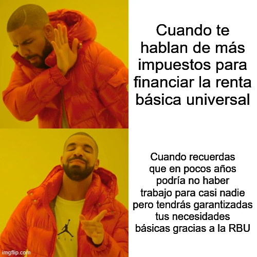

estrategIA #79 ·
La renta básica cambia de perspectiva
El contexto
El número defendía abrir el debate sobre renta básica ante posibles cambios del empleo. Las dos reacciones contrastan el rechazo a financiarla con impuestos y la tranquilidad de contar con necesidades cubiertas. El desempleo generalizado funciona como escenario del argumento, no como pronóstico confirmado.
Publicado en: estrategIA #79 - Inteligencia artificial y el fin del trabajo: por qué la renta básica universal es ya un debate ineludible
Leer el texto de la imagen
Cuando te hablan de más impuestos para financiar la renta básica universal Cuando recuerdas que en pocos años podría no haber trabajo para casi nadie pero tendrás garantizadas tus necesidades básicas gracias a la RBU
Marca de la herramienta visible en el original: imgflip.com.